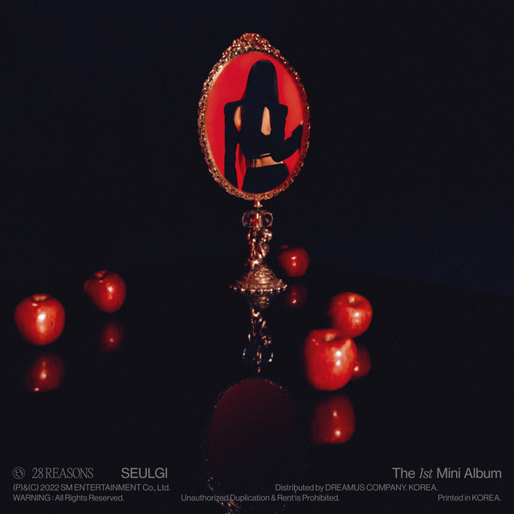
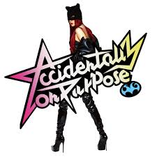

Solo Albums
Irene – Like A Flower
Release Date: (November 26, 2024)
Tracklist:
- Like A Flower
- Summer Rain
- Calling Me Back
- Strawberry Silhouette
- Start Line
- Winter Wish
- Ka-Ching
- I Feel Pretty
Seulgi – 28 Reasons
Release Date: October 4, 2022
Tracklist:
- 28 Reasons
- Dead Man Runnin'
- Bad Boy, Sad Girl (feat. BE'O)
- Anywhere But Home
- Los Angeles
- Crown
Seulgi – Accidentally on Purpose
Release Date: (March 10, 2025)
Tracklist:
- Baby, Not Baby
- Better Dayz
- Rollin' (With My Homies)
- Whatever
- Praying
- Weakness